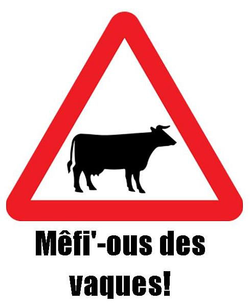
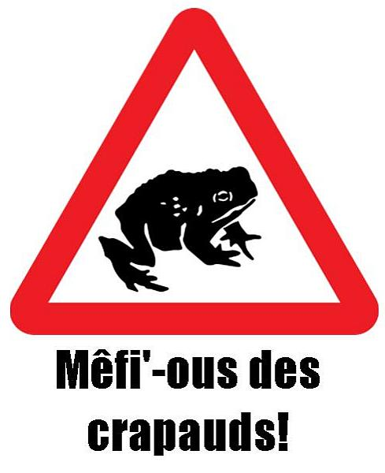

|
 |
 |
 |
|
Jèrriais |
Angliais |
|
un âne |
donkey |

| un angné | lamb |
| eune armadil'ye | armadillo |
| un babouîn | baboon |
|
lé bâsset |
spaniel |
|
lé bestchias, les bêtes à cornes |
cattle |
|
la biche |
goat |

|
lé bichot |
billy-goat |
|
lé blaireau |
badger |
|
la bièvre |
beaver |
|
lé blianc-ours |
polar bear |
| un blianc r'nard | Arctic fox |
|
lé boeu |
bullock |
|
lé boeu |
ox |
|
lé boeu, lé touathé |
bull |
|
lé bouët |
bull-calf |
|
la bison |
bison |
|
la b'lette |
stoat |

|
la brébis |
sheep, ewe |
|
lé castor |
beaver |
| eune bête armée | armadillo |
| un bèrcat | bearcat, binturong |
|
un cat |
|
|
lé caton |
kitten |
| eune catte-bélette | bearcat, binturong |
| un caméléon | chamaeleon |
| eune caûque-souothis | bat |
|
lé chanmeau |
camel |
|
lé chèr |
deer, stag |
| un chèr du Nord | reindeer |
|
lé colînmachon |
snail |

|
lé couochon, la bête à saie, lé por, lé gronneux, lé moussieu, lé quétot |
|
|
lé couochon d'la Dginnée |
guinea pig |
|
un crapaud |
|
| un couochon d'tèrre | aardvark |
| un couoyoté | coyote |
| un coyoté | coyote |
|
la crocodile |
crocodile |
| un dîngo | dingo |
| un dgiaqua | jackal |
|
lé dromadaire |
dromedary |
| un êlan | elk |
|
l'êléphant |
|
|
l'êtalon, lé j'val entchi |
stallion |
|
un êtchutheu |
squirrel |
|
lé futhet |
ferret |
| un gal'ron | walrus |
|
la geniche |
heifer |
|
la gèrche |
young ewe; doe, hind |
|
la girafe |
giraffe |
|
lé gorille |
gorilla |
|
lé hanmster |
hamster |
|
lé hérichon, lé hérisson |
hedgehog |
| un heusky | husky |
| eune hyène | hyena |
| eune hienne | hyena |
|
la jeunment |
mare |

|
lé j'va |
horse |
|
lé kangarou |
kangaroo |
|
la lêzarde |
lizard |
|
la lêzarde dg'ieau |
newt |
|
la lînmache |
slug |
|
un lapîn |
rabbit |

|
lé lévri |
greyhound |
|
lé lièvre |
hare |
|
lé lion |
lion |
|
lé lion d'mé |
sea-lion |
| un llama | llama |
|
lé loup-mathîn, la sirène |
seal |
| un loup du d'sèrt | jackal |
| un loup-mathîn à d'fenses | walrus |
|
la martre |
marten |
|
lé mâle cat, lé maraouau |
tom cat |
|
lé marmoûset |
ape |
|
lé marmoûset, lé sînge |
monkey |
| un mèrcat | meerkat |
|
lé mulot |
Jersey bank-vole |
|
lé mulot, la souothis d'clios |
fieldmouse |
|
la mustchinne |
shrew |
| un nièr léopard | black panther |
|
l'orîngna |
moose |
|
l'orvet |
blind worm |
|
l'ourse |
bear |
| un pangolîn | pangolin, scaly anteater |
|
lé panda |
panda |
|
lé pêtre |
spider |
|
lé pitouais, lé putouais |
polecat |
|
lé poulain |
foal |
|
lé p'tit bichot, la bichette |
kid |
|
lé p'tit crapaud |
tadpole |
|
lé p'tit j'va, lé pônîn, lé bidet |
pony |
| un pliatypus | platypus |
|
lé rat |
rat |
|
lé rat mustchi |
muskrat |
|
lé rat dg'ieau |
water-vole |
|
lé rhinocéros |
rhinoceros |
|
lé r'nard |
fox |
|
la raînotte |
frog |
| un scorpion | scorpion |
|
la souothis |
mouse |
|
la taupe, lé taupîn |
mole |
|
la tchilieuvre, lé sèrpent |
snake |
|
la tortue |
tortoise |
|
la trie, la couoche, la quétote, la quette |
sow |

|
lé tchian |
dog |
|
lé tchian d'race |
pedigree dog |
|
lé tchian d'St Mâlo |
poodle |
|
lé tchian mêlé |
mongrel dog |
| un tchian taqu'té | African wild dog |
| un tchian peintuthé | African wild dog |
| un tchîmpanzé | chimpanzee |
| eune tigrêsse | tigress |
| un véthot à véthues | warthog |
|
lé vèr |
worm |
|
lé véthot |
boar |
|
lé vieau |
calf |
|
la vaque |
|
|
lé zèbre |
zebra |

|  |  |  |
 |
 |
 |
 |
 |
Viyiz étout: